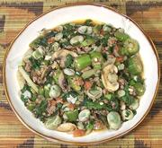

|
Ground Beef, Okra & "Spinach"Africa - Sub-Saharan | ||||
| Serves: Effort: Sched: DoAhead: |
4 main *** 55 min Most |
A tasty dish that's easy to make, very quick cooking - and the okra isn't at all slimy. Make only as much as you need and serve right away as the color goes off if it sits very long. The photo serving was made with chard and skin-on fava beans. | |||
|
1/2 ------ 6 4 1/3 ------ 1/2 6 2 1 1-1/2 3/4 ------ 1/2 2 2 1/4 1 |
# --- oz oz in --- # oz cl t t --- # T c c |
Beef, lean -- Onion mix Onion Mushrooms Ginger root -- Okra mix Okra pods Tomatoes Chili, Thai (1) Garlic Tomato Paste Salt -------- "Spinach" (2) Scallions Oil Water Fava Beans (3) |
Prep - (40 min)
|